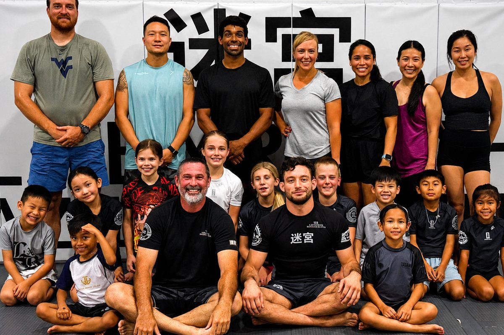

Parents in Fulshear and Katy ask us a version of the same question every few weeks. Their child plays a sport (football, volleyball, wrestling, jiu jitsu) and somebody has told them the kid needs to "get stronger." They do not know what that means at eleven years old, they are not going to hand a middle schooler a barbell on the strength of a YouTube video, and the local options are either a personal trainer at $80 an hour or nothing.
So we built the class. Strength and conditioning at Labyrinth runs Tuesday and Thursday at 4:15 PM, it is coached by Professor Shaun Lawler, and it is included in every membership. There is no add-on, no separate rate, no minimum commitment. If you already train here, you already have it.
It Is Genuinely All Ages, And That Is On Purpose
This is not a kids class that adults are tolerated in, and it is not an adult class with a kids' corner. It is one session, and the seven-year-old, the fifteen-year-old and the forty-two-year-old all work through the same session at their own load.
That sounds like a compromise. In practice it is the best part of the class. A child who watches a grown adult struggle through the last round of a circuit learns something about effort that no amount of encouragement from a coach delivers. And a parent who trains next to their own kid twice a week stops being the person who drops them off, which changes how the child treats the session.

It also solves the logistics problem that quietly kills most family fitness plans. One trip, one time slot, everybody trains. At 4:15 PM it lands after school and before the evening BJJ classes, so a child can do strength work and then step straight onto the mats, or go home.
Is Strength Training Safe for Children?
This is the question every parent actually wants answered, so let us take it head on.
The fear is that resistance training stunts growth or damages growth plates. That belief has been around for decades and the research does not support it. The major position statements on the subject (from the National Strength and Conditioning Association, the American Academy of Pediatrics, and the international consensus on youth resistance training) all say the same thing: supervised, appropriately programmed resistance training is safe for children and adolescents, and the injury risk is lower than in the sports those children already play.
The qualifier that matters is supervised and appropriately programmed. Injuries in youth strength training almost all come from the same two places: unsupervised access to equipment, and loads chosen to impress rather than to train. Neither exists in a coached class. Nobody is maxing out. Nobody is training alone.
What we care about at the younger ages is not how much a child can lift. It is whether they can control their own body. Can they squat to depth without their knees collapsing inward? Can they hinge at the hip instead of rounding the back? Can they land from a jump quietly? Those are the skills that prevent the ACL tear at sixteen, and they are learned young or they are learned the hard way.
What Athletic Development Actually Means at This Age
"Strength and conditioning" for a nine-year-old does not look like strength and conditioning for a college athlete, and any program that treats them the same is a bad program.
Before puberty, a child's strength gains come overwhelmingly from the nervous system rather than from muscle growth. They are learning to recruit what they already have. That means the highest-value work is coordination, movement quality, and the ability to produce and absorb force: sprinting, changing direction, jumping and landing, crawling, carrying, bracing.
The practical result is that a well-run youth session looks more like organized athleticism than like a gym. It is loud, it moves fast, and a child who would not last ten minutes on a treadmill will happily work for forty. That is not a compromise for the sake of engagement. It is what the age actually responds to.
As athletes grow, the same session progresses. A teenager who has spent two years learning to squat, hinge, push, pull and carry under supervision is ready for real load in a way that a teenager who started last week is not. The class is built as a ladder, not as a single workout repeated forever.
What It Does for a Jiu Jitsu Athlete
We are a Brazilian jiu jitsu academy first, and the honest reason this class exists is that technique stops being the limiting factor sooner than most people expect.
Watch a kids' division at a tournament. In the early rounds, the technical gap decides matches. By the semifinals, most of the remaining kids know roughly the same techniques, and what separates them is who can still generate a hard grip in the fifth minute, who can carry a scramble, and who is not gassed after the first takedown attempt. Strength and conditioning is not a substitute for mat time. It is what stops good technique from being unusable when it matters.
Grappling makes very specific demands: grip endurance, the ability to create and resist rotation, hip strength through a full range, and a spine that can stay braced while somebody actively tries to fold it. Those are trainable, and they are trainable off the mats without stealing time from technique.
There is a second effect that shows up faster than the athletic one. Being physically capable changes how a child carries themselves, the same reason we talk about jiu jitsu building confidence and discipline. A kid who has watched their own body get measurably better at something over eight weeks has evidence about themselves that no compliment supplies.
You Do Not Have to Be an Athlete to Come
Plenty of the people in this class are not competing at anything. Some are parents who have not trained in fifteen years. Some are kids whose sport is not jiu jitsu at all: football and volleyball players from Lamar CISD, wrestlers looking for offseason work, and children who play nothing yet and need somewhere to start.
That is fine, and it is worth saying plainly because the phrase "strength and conditioning" scares off exactly the people who benefit most from it. Nobody is timed against anybody else. The comparison is to what you did last Tuesday.
Practical Details
- When: Tuesday and Thursday, 4:15 PM, at our Fulshear academy.
- Who: All ages, all fitness levels, members and trial students.
- Coach: Professor Shaun Lawler: black belt, 15+ years on the mats, and the coach who develops athletes here from first class through elite competition.
- Cost: Included in any Labyrinth membership at no extra charge. See our membership options or read the full breakdown of what training here costs.
- What to wear: Shorts or athletic pants, a t-shirt, and trainers. No gi, no equipment to buy.
- First session: Free, like every first class here. Book it and come see.
Who This Is Really For
If your child is already training with us, this is two extra sessions a week that make everything else they do work better, at no additional cost, and there is no good reason not to use them.
If you are looking for youth strength and conditioning in Fulshear, Katy, Cinco Ranch or Richmond and you found us by searching for it. You do not have to be a jiu jitsu family to come to this class. Come to the strength class, and if the mats end up interesting your kid, that is a separate conversation on a separate day.
And if you have been dropping a child off twice a week and sitting in the car, the class is open to you too. That was, if we are honest, half the reason we made it all ages.
Questions about whether it suits your child specifically? Call us at (281) 393-7983 or check the FAQ. We are at 6615 West Cross Creek Bend Lane, Suite #400, Fulshear, TX 77441.